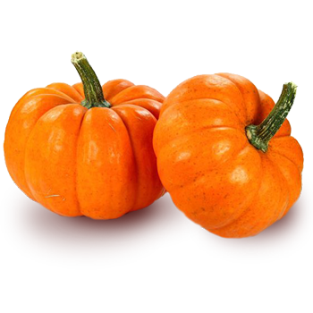
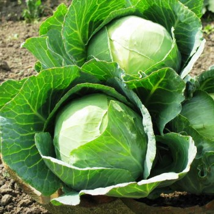
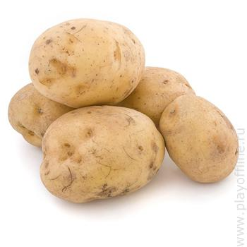
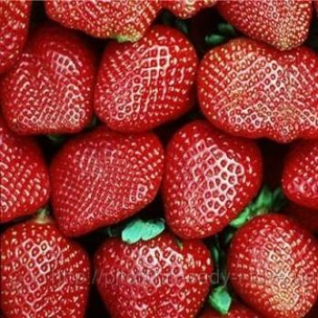
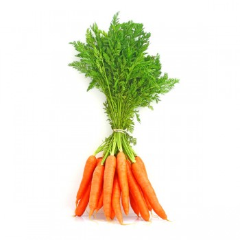
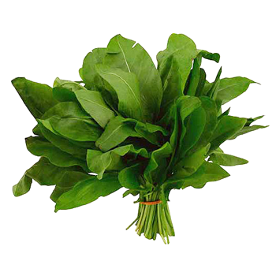
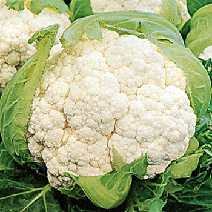
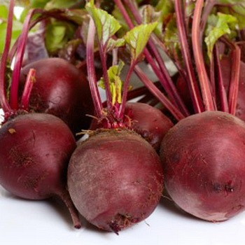

Помидор – название растения и одноименных плодов. Название «помидор» в переводе
с итальянского обозначает - золотое яблоко, а слово томат произошло от ацтекского
«матль».
Помидор – название растения и одноименных плодов. Название «помидор» в переводе
с итальянского обозначает - золотое яблоко, а слово томат произошло от ацтекского
«матль».
 В зрелых плодах баклажанов содержится много клетчатки, пищевых волокон, пектин,
органические кислоты, каротин, дубильные вещества, натуральный сахар, минеральные
и биологически-активные вещества. Среди минералов следует отметить наличие алюминия,
кобальта, фосфора, железа, меди, цинка и марганца.
В зрелых плодах баклажанов содержится много клетчатки, пищевых волокон, пектин,
органические кислоты, каротин, дубильные вещества, натуральный сахар, минеральные
и биологически-активные вещества. Среди минералов следует отметить наличие алюминия,
кобальта, фосфора, железа, меди, цинка и марганца.

Тыква обыкновенная — однолетнее, очень распространенное растение, которое выращивают
на огородах и баштанах. Тыква стелится по земле, имеет волосистый стебель и крупные,
жесткие, лопастные листья. Может цепляться за другие растения или предметы с помощью
ветвистых усиков.

 Горох – самоопыляющееся однолетнее травянистое растение с хорошо разветвленной
стержневой корневой системой, ветвящимся стеблем и непарноперистыми сложными листьями,
черешки которых оканчиваются цепкими усиками, из семейства Бобовых.
Горох – самоопыляющееся однолетнее травянистое растение с хорошо разветвленной
стержневой корневой системой, ветвящимся стеблем и непарноперистыми сложными листьями,
черешки которых оканчиваются цепкими усиками, из семейства Бобовых.

Капуста белокочанная является двухлетним растением семейства Капустных.
Большинство стран для выращивания этого полезного овоща отводят немалые площади.
Её начали возделывать ещё в Древней Иберии, жители которой назвали овощ «ащи».

Клубень картофеля представляет собой разросшуюся почку, состоящую из наполненных
крахмалом клеток, снаружи покрытую тонким слоем пробковой ткани.
На поверхности клубня располагаются пазушные почки, так называемые глазки,
из которых развиваются молодые побеги.

Клубника вызывает самые яркие ассоциации с летом. Начиная свое цветение в мае,
уже в первый месяц лета она радует нас своими спелыми ягодами.
Благодаря ей, можно пополнить запасы своего организма на макро микро элементы,
которые растратились в осенне-зимний период.

Морковь - название двухлетнего растения и одноименного корнеплода.
Родиной моркови считается территория современного Афганистана. Долгое время
морковь выращивали не из-за корнеплодов, а ради листьев и семян, которые
использовали в качестве приправы. Лишь с I века н. э. корнеплоды моркови стали
употреблять в пищу.

Щавель – название рода растений из семейства Гречишных. История культивирования
этой овощной культуры началась несколько тысячелетий назад, упоминания о щавеле
встречаются в работах Вергилия и Плиния Старшего, а Авиценна в своем
"Каноне врачебной науки" описал его лечебные свойства.

Цветная капуста — однолетнее яровое или озимое растение. Корневая система
мочковатая, близко расположенная к поверхности почвы. Стебель цилиндрический,
15—70 см высоты, с горизонтально расположенными или прямо или косо вверх
направленными листьями, весьма часто спиральнообразно изогнутыми.

Свекла – название растения и одноименного плода. История окультуривания свеклы
берет свое начало на территории современной Индии, где и сейчас можно повстречать
ее в диком виде. Свеклу выращивали в древнем Вавилоне, Египте, Греции и Риме.
 Виноград - название куста и одноименного плода. Виноград – одно из первых растений,
которое начал культивировать человек. Первые упоминания о винограде датируются 5-6
тысячелетиями до н.э. – уже тогда его выращивали в Египте и Месопотамии.
Виноград - название куста и одноименного плода. Виноград – одно из первых растений,
которое начал культивировать человек. Первые упоминания о винограде датируются 5-6
тысячелетиями до н.э. – уже тогда его выращивали в Египте и Месопотамии.